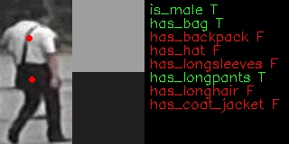
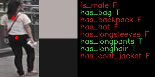
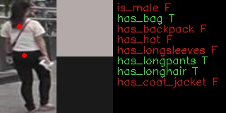
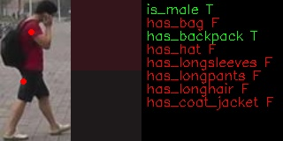
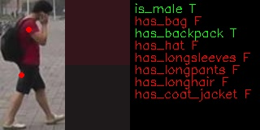

This model presents a person attributes classification algorithm analysis scenario. It produces probability of person attributions existing on the sample and a position of two point on sample, whiches can be used for color prob (like, color picker in graphical editors)
  
  

| Metric | Value |
|---|---|
| Pedestrian pose | Standing person |
| Occlusion coverage | <20% |
| Min object width | 80 pixels |
| Supported attributes | gender, has_bag, has_backpack, has hat, has longsleeves, has longpants, has longhair, has coat_jacket |
| GFlops | 0.174 |
| MParams | 0.735 |
| Source framework | Pytorch* |
| Attribute | F1 |
|---|---|
is_male |
0.87 |
has_bag |
0.52 |
has_backpack |
0.60 |
has_hat |
0.54 |
has_longsleeves |
0.41 |
has_longpants |
0.88 |
has_longhair |
0.87 |
has_coat_jacket |
0.73 |
Link to performance table
name: "input" , shape: [1x3x80x160] - An input image in following format [1xCxHxW], where
The expected color order is BGR.
is_male, has_bag, has_backpack, has_hat, has_longsleeves, has_longpants, has_longhair, has_coat_jacket]. Value > 0.5 means that an attribute is present.[*] Other names and brands may be claimed as the property of others.